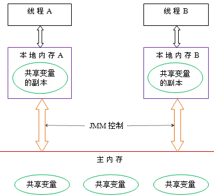

对Java内存模型的理解，以及其在并发中的应用
Java内存模型的主要目标: 定义程序中各个变量的访问规则。
Java线程之间的通信由Java内存模型（本文简称为JMM）控制。
所有变量的存储都在主内存，每条线程还都有自己的工作内存，线程的工作内存中保存了被该线程使用到的变量的主内存副本拷贝，线程对变量的所有操作必须在工作内存完成，而不能直接读取主内存中的变量。不同的线程直接无法访问对方工作内存中的变量，线程间变量的传递均需要通过主内存来完成。

线程间通信：
- 首先，线程A把本地内存A中更新过的共享变量刷新到主内存中去。
- 然后，线程B到主内存中去读取线程A之前已更新过的共享变量。
指令重排序，内存栅栏等
指令重排序：编译器或运行时环境为了优化程序性能而采取的对指令进行重新排序执行的一种手段。在单线程程序中，对存在控制依赖的操作重排序，不会改变执行结果；但在多线程程序中，对存在控制依赖的操作重排序，可能会改变程序的执行结果。
volatile的语义，它修饰的变量一定线程安全吗
一个变量被定义为volatile之后，具备两重语义：
①保证此变量对所有线程的可见性，即当一条线程修改了这个值，新值对于其他所有线程来说是立即得知的，普通变量需要通过主内存传递。
②禁止指令重排序优化。
Volatile修饰的变量不一定是线程安全的，eg：非原子操作a++
类的实例化顺序，比如父类静态数据，构造函数，字段，子类静态数据，构造函数，字段，他们的执行顺序
先静态、先父后子。
先静态：父静态 > 子静态
优先级：父类 静态代码块> 子类 静态代码块 > 非静态代码块 > 构造函数
一个类的实例化过程：
- 父类中的static代码块，当前类的static
- 顺序执行父类的普通代码块
- 父类的构造函数
- 子类普通代码块
- 子类（当前类）的构造函数，按顺序执行。
- 子类方法的执行
锁优化：锁消除，锁粗化，锁偏向，轻量级锁
锁优化
为了在线程之间更高效地共享数据，解决竞争问题，从而提高程序的执行效率，实现了多种锁优化技术。
自旋锁与自适应自旋
互斥同步对性能最大的影响：阻塞的实现，挂起和恢复线程的操作都需要转入内核态中完成。由于在很多时候，共享数据的锁定状态只会持续很短的时间，为了这段时间去进行挂起和恢复线程并不值得。因此可以考虑：当物理机有多个处理器，可以多次并行执行多个线程，此时可以让后面请求锁的线程稍等一会儿，但不放弃处理器的执行时间，看看持有锁的线程是否很快释放锁。为了让线程等待，会让线程执行一个忙循环(自旋)。
自旋锁：如果锁被占用的时间比较短，自旋等待的效果很好，避免了线程切换的开销。如果锁占用时间很长，自旋只会白白消耗处理器资源，因此自旋等待的时间会有一个限度。一般自旋次数 默认是 10次。自旋等待不能代替阻塞，主要原因是 虽然避免了线程切换的开销，但是需要占用处理器的执行时间。
自适应自旋：自适应表示 自旋的时间不固定，而是由 前一次在同一个锁上的 自旋时间 及 锁的拥有者状态 来决定。
锁消除
对于一些代码要求同步，但被检测不可能存在共享数据竞争。此时会将同步锁移除。
锁粗化
原则上：总是要求 同步块的作用范围尽可能的小。这样是使得 需要同步的操作数量尽可能变小，如果存在锁竞争，等待锁的线程也能尽快的拿到锁。
如果虚拟机检测到有一连串的操作 都是对同一个对象加锁，那么会将加锁同步的范围扩展到(粗化)到整个操作序列的外部。
轻量级锁
在没有多线程竞争的前提下，轻量级锁使用CAS操作，来避免使用互斥量的开销。但是 若存在锁的竞争，此时不光有 互斥量的开销，还额外增加了CAS操作，因此在有竞争的情况下，轻量级锁会比重量级锁执行效率更慢。
偏向锁
轻量级锁 是 在没有多线程竞争的前提下，使用CAS操作，来避免使用互斥量的开销。偏向锁 是在无竞争的情况下，将整个同步消除掉，连CAS操作都不做了。
当锁对象第一次被线程获取时，虚拟机会把对象的头的标志位设置为：01，即偏向模式。只要有另外的线程去产生获取这个锁，那么偏向模式就宣告结束。
偏向锁可以提高带有同步但无竞争的程序的性能。但是 它并不是总是对程序有利，如果程序中大多数的锁总是被多个不同的线程访问，那么偏向模式就是多余的。